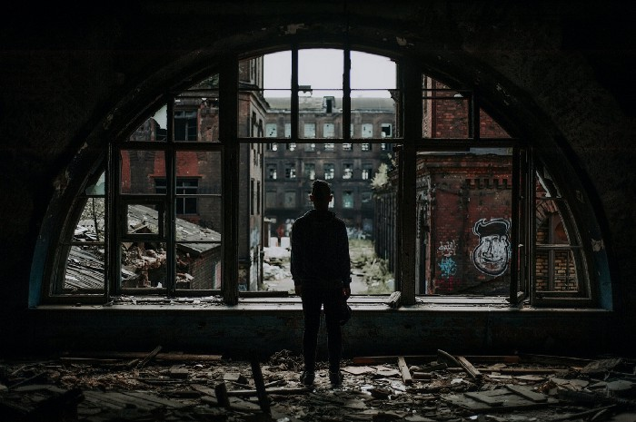

İdealler Ve İnançlar
Eylül 15, 2021
Nedir bu idealler ve inançlar?
Bana göre insanın yaşama prensiplerinin temeli olduğuna inandığım iki maddedir. Her birimiz yaşantımız içerisinde ideallerimiz uğruna yaşamaya çalışırız. Bu doğrultuda uğraşır, bu amaç uğrunda yeniden ayağa kalkar, bu idealler uğrunda kendimizi inanır ve yola devam ederiz. Kimi zaman bir yaprak gibi savrulur, kimi zaman ise dizlerimizin üzerine çökeriz. Ama yıkılmayız, yıkılamayız. Hayat adını verdiğimiz bu kısa süreç kimimiz için yeterince zorlu, kimimiz için değil ama sonuçta bu birnevi bir sınav. Herkesin yalnız başına değil, bir arada vermesi gereken bir sınav.
Her hayatın birbirinden farkı olmaksızın değerli olduğunu düşündünüz mü? Düşünün. Bir ressamın hayal dünyasında kuramadığını küçük bir çocuk sanki bir film izlercesine kafasında inşa edebilir. Bir askerin kararlı ve soğuk kanlı planlamasını sevdiklerini kaybetmiş her insan hayatında gösterebilir. Kimi zaman zorluklarla, kimi zaman sevdikleriyle beraber bir insan nice büyük farklılıklar yaratabilir.
Fakat hayatı anlamlı kılmak, yine bizlerin elindedir. Bu durum sadece bir kişinin, bir grubun ideali değildir. Olmamalıdır. Tüm insanlığın ideali olmalıdır. Yaşantısını, yaşam şartlarını, geleceği geliştirmek ve güzelleştirmek. Kısa ömründe bir ideal ile birlikte bu dünyaya yapıcı eserler bırakmak. Kiminin düşlerini, kiminin ideallerini gerçekleştirmesine yardımcı olmak.
Akıl almaz teknolojilerin çağında yaşıyoruz. Üretiyoruz, geliştiriyoruz, tüketiyoruz. Ama yaşantımıza etkisi ne için bu kadar az? Bir kısım açlıktan ölürken, bir kısım neden gözleri kapalı. Tarımı ve üretimi otomasyonel olarak dönüştürebilecek ve doğru adımlarla yaşantımızı, kaynaklarımızı verimli kullanabilecek iken neden savaş araçlarımızı geliştirmeye öncelik veriyoruz? Neden kara düzen devam ediyoruz?
Bu yazının satırlarına yeni kelimeler eklemek bilineni anlatmaktan farksız ve yersiz. Unutma çıkarlarına dayalı yaşamak senin, yarının, tüm insanlığın bir sorunudur.
Küçük bir kar tanesi kadar bile olsa bu hayata güzel izler bırak. Kendine de çok iyi bak.